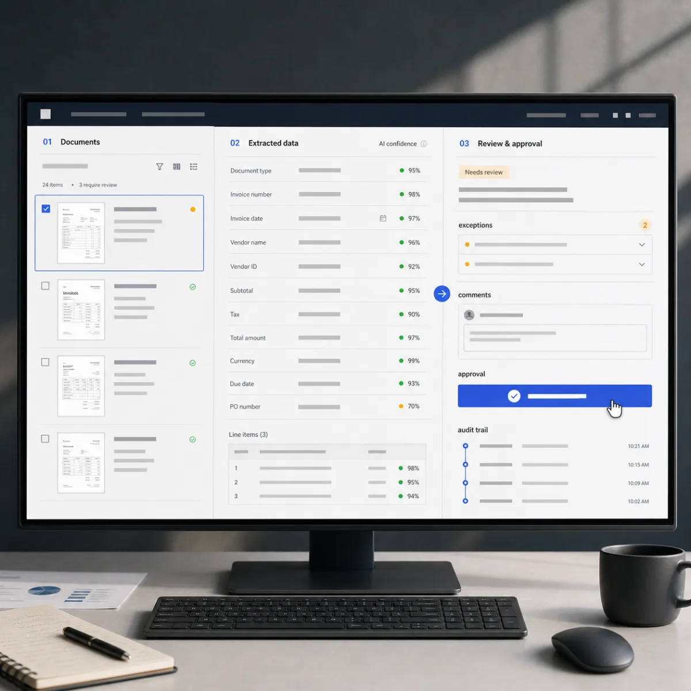
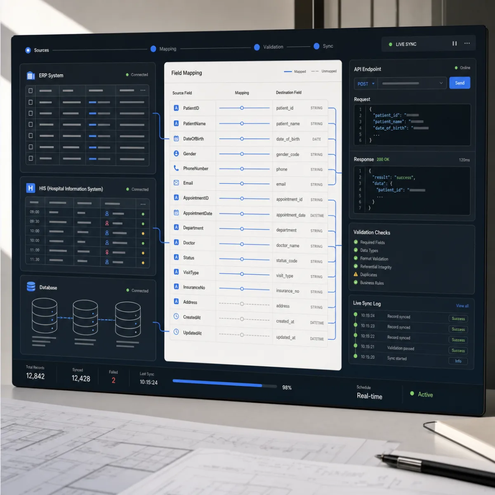
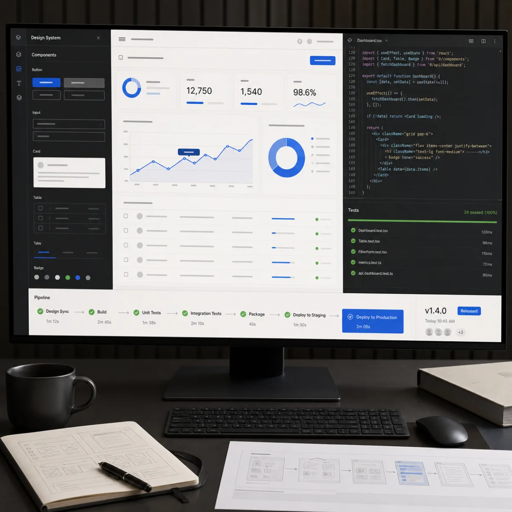
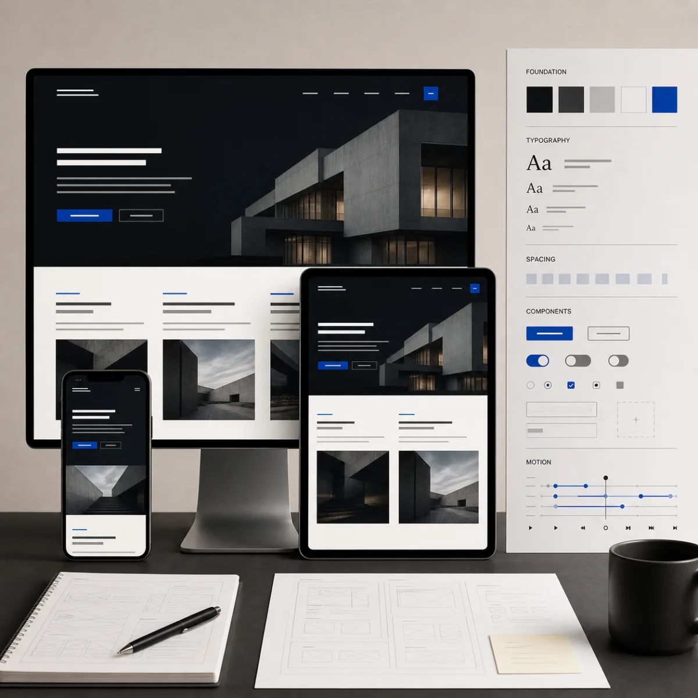

무엇을 만들지 결정합니다.
표면의 요청보다 실제 업무와 사용자의 문제를 먼저 살펴봅니다. 개발하지 않는 편이 나은 경우도 함께 판단합니다.
REGULATED SYSTEMS · ARCHITECTURERemote · 2026
알렉스소프트(ALEXSOFT)는 법제와 인증, 기존 시스템의 제약 안에서 실제로 작동하는 구조를 설계하고, 설계한 시스템은 직접 만듭니다.
ALEXSOFT가 필요한 순간
법제와 인증, 이미 돌아가는 시스템의 제약을 통과해야 실제로 쓰이는 시스템이 됩니다.
ALEXSOFT의 관점
좋은 소프트웨어는 기능의 합이 아닙니다. 사람의 맥락을 읽고, 복잡함을 정돈하며, 눈에 보이지 않는 구조까지 집요하게 다듬은 하나의 작품입니다. 빠르게 만드는 기술보다 무엇을 만들고 어떻게 오래 작동하게 할 것인지가 더 중요하다고 믿습니다.
01 — CRAFT OVER CONVENIENCE
작업 방식
무엇을 만들지 판단하는 첫 대화부터 배포 이후의 운영까지, 네 단계를 하나의 흐름으로 연결합니다.
표면의 요청보다 실제 업무와 사용자의 문제를 먼저 살펴봅니다. 개발하지 않는 편이 나은 경우도 함께 판단합니다.
사용자, 데이터, 권한과 기존 시스템의 관계를 정리해 설명 가능하고 확장 가능한 구조를 설계합니다.
적절한 기술과 검증된 엔지니어링을 결합하고, 테스트와 실제 사용 흐름을 통해 결과를 확인합니다.
사용감, 성능, 보안, 오류 대응과 변경까지 고려해 지속 가능한 시스템으로 완성합니다.
SELECTED WORK
알렉스소프트가 직접 설계하고 만든 제품과 공개 프로젝트입니다. 우리가 제안하는 설계 방식이 실제로 작동하는지 먼저 검증한 결과물입니다.
CASCADE
Git commit에서 화면·API·메서드·SQL·테이블까지의 계보를 재현하는 정적분석 기반 Software PLM. 사실과 추론을 분리하고, AI는 필요한 곳에만 선택적으로 더합니다.
CAREFLOW
수급자, 케어플랜, 송영, 간호, 청구, 급여까지 82개 운영 테이블을 연결한 장기요양 플랫폼. 183개 경쟁 화면 분석을 127개 통합 요구사항으로 재구성한 도메인 설계에서 출발했습니다.
GOALBOARD
조직·프로젝트·목표를 하나의 맥락으로 연결하는 Goal OS. 테이블, 보드, 타임라인과 대시보드가 같은 데이터를 바라보고 자동화와 체크인으로 실행을 이어갑니다.
 SCROLL-CINEMA EXPERIENCE
SCROLL-CINEMA EXPERIENCE
THE GRACE
다섯 편의 시네마틱 장면이 스크롤에 맞춰 크로스페이드되는 주간보호센터 브랜드 사이트. 운영자가 에디션을 직접 전환할 수 있는 배포 흐름까지 설계했습니다.
제공하는 일
특정 기술의 도입 자체를 목표로 삼지 않습니다. 업무와 사용자 경험 안에서 분명한 효용을 만드는 방법을 선택합니다.

HUMAN-IN-THE-LOOP / ACTIVE국가 단위 전자문서 교환체계와 보안 표준을 설계한 경험으로 ERP, API, 기간계와 흩어진 데이터를 연결하고 복잡한 업무 관계를 설명 가능한 구조로 바꿉니다.

TRACEABLE DATA / CONNECTED의원급 EMR을 제품으로 만들고 인증까지 통과시킨 경험으로, 의료 시스템의 설계와 데이터 구조, 연동 방식을 함께 판단합니다.

PROTOTYPE → PRODUCT아이디어와 초기 도구를 권한, 테스트와 배포 체계를 갖춘 소프트웨어로 완성합니다.

SCROLL · SPACE · RESPONSE두 가지 시작점
구조를 먼저 판단해야 하는 일과, 이미 분명한 브랜드를 화면으로 구현하는 일은 다른 방식으로 시작합니다.
만들기 전에 구조를 판단해야 할 때
브랜드가 분명하고 화면으로 옮길 때
30분 확인은 서로 맞는 일인지 판단하는 자리이며 분석 문서나 설계안은 제공하지 않습니다. 금액은 범위 확인 후 제시합니다.
경험이 만드는 판단
알렉스소프트(ALEXSOFT)는 필리핀 국세청 e-invoice 시스템 구축 사업(KOICA, 2018–2022)의 개발 PL로 문서 표준과 교환체계 보안 표준을 설계하고 개발을 이끌었으며, 그 시스템은 2022년 가동 이후 지금도 운영 중입니다. 이어 EMR 인증을 받은 의원급 EMR 중 최초의 클라우드 제품을 개발 리더로 시작해 최근 2년 개발·기획설계를 총괄했습니다. AWS Solutions Architect Professional을 보유하고, 조선해양·공공·의료 현장의 시스템을 20년 이상 다뤄왔습니다.
작업 기준
개발부터 시작하지 않고 제품 도입과 자동화까지 가장 적절한 방법을 찾습니다.
데이터와 시스템의 관계, 변경의 이유를 확인하고 추적할 수 있게 만듭니다.
시연이 아니라 실제 사용, 오류, 변경과 유지보수까지 견디게 합니다.
다음 프로젝트
구조를 먼저 판단해야 하는 일도, 브랜드의 첫인상을 새로 만드는 일도 좋습니다.
30분 동안 서로 맞는 일인지 확인하고 가장 적절한 시작점을 안내합니다.